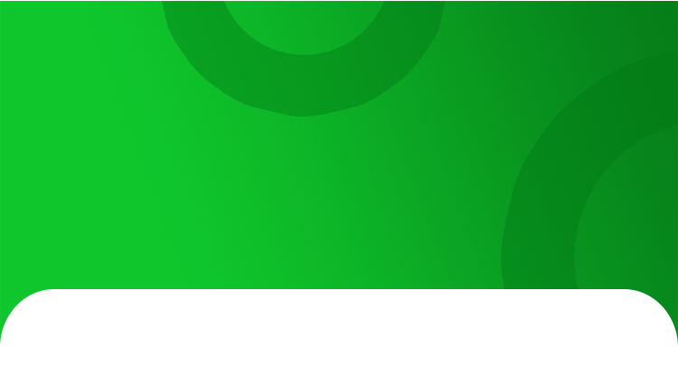

<ion-header style="z-index: 0; margin-bottom: -20px;">
    <ion-buttons slot="start" class="header-back-button" mode="md">
      <ion-back-button style="color: white;" icon="chevron-back"></ion-back-button>
    </ion-buttons>
  
    <ion-toolbar>
        
      <app-explore-container headerColor="white"></app-explore-container>
      
      
    
      <p style="top: 38%; position: absolute; left: 24px; font-size: 26px; color: whitesmoke; width: 216px; text-transform: capitalize;"> {{header}} </p>
    </ion-toolbar>
  </ion-header>

<ion-content>

  <div>

  <div class="outer-div" *ngFor="let d of data[i].contents; let index = index; let even = even">
    <!-- <div class="box" [style]="'background-image:url('+d.imagefiles[0]+')'"> -->
      <div class="box">
      
      <!-- <div class="box" [style]="'background-color:'+common.colors2[index%18]"> -->
      <!-- <p class="p1"> {{index+1}} </p> -->
      <p class="p1">  </p>
    </div>
    <p class="p2" [style]="'color:'+common.colors2[index%16]"> {{d.word}} </p>
    <p class="p3" (click)="common.playAudio(d.pronouncefiles[0])"> {{d.meaning}} </p>

    <div  class='border-line'></div> 

  </div>

  <!-- <div *ngIf="i > 0" class="button-div" style="left: 5px;" (click)="onPreviousClick()"> -->
    <!-- Footer Previous Button -->
    <!-- <p style="left: 52px;">Prev</p>
    
  </div> -->

  <!-- <div *ngIf="! ((data.length)-1 == i) && data.length > 1" class="button-div" (click)="onNextCick()"> -->
    <!-- Footer Next Button -->
    <!-- <p>Next</p>
    
  </div> -->

  </div>

  <!-- Worksheet / Games -->
  <app-explore-container aspectId="4" [aspectSubId]="data[i].sublevelid" [worksheet]="data[i].worksheet" [games]="data[i].games"></app-explore-container>

</ion-content>

<ion-footer class="ion-no-border">
  <ion-toolbar>
      <ion-button *ngIf="i > 0" shape="round" size="small" style="text-transform: none; left: 0px;" class="button-div" (click)="onPreviousClick()"> Prev </ion-button>
      <ion-button *ngIf="! ((data.length)-1 == i) && data.length > 1" shape="round" size="small" style="text-transform: none;" class="button-div" (click)="onNextCick()"> Next </ion-button>
  </ion-toolbar>
</ion-footer>

